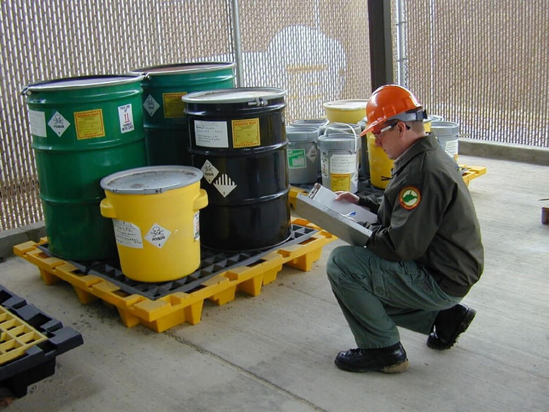

Produtos Químicos Perigosos: Riscos e Consequências do Descarte Indevido
O descarte inadequado de produtos químicos perigosos representa um dos maiores desafios ambientais e de saúde pública da atualidade. Produtos químicos mal descartados não apenas comprometem a segurança das pessoas, mas também podem causar danos irreparáveis ao meio ambiente, afetando a biodiversidade, a qualidade da água e do solo e até mesmo a saúde de seres humanos.
⚠️ O que são produtos químicos perigosos?
Produtos químicos perigosos são substâncias ou misturas que, por suas propriedades físicas e químicas, apresentam riscos de explosões, incêndios, intoxicações ou danos ambientais. Eles possuem características específicas que os tornam altamente reativos e prejudiciais quando não descartados de maneira adequada. Esses produtos estão presentes em muitas indústrias, laboratórios, agricultura e até mesmo em nossos lares.
Tipos de produtos químicos perigosos:
- Inflamáveis: Substâncias que podem pegar fogo facilmente.
- Corrosivos: Substâncias que causam danos à pele e materiais quando entram em contato.
- Tóxicos: Produtos que, mesmo em pequenas quantidades, podem causar intoxicações graves.
- Explosivos: Substâncias que podem explodir em contato com outros produtos ou condições adversas.
- Reativos: Produtos que podem causar reações violentas quando misturados com outras substâncias.
💥 Consequências do Descarte Indevido
1. Perigos Imediatos
- Incêndios e explosões: O descarte de produtos inflamáveis ou explosivos em locais inadequados pode resultar em incêndios ou até mesmo em explosões. Por exemplo, solventes como acetona ou benzina são altamente inflamáveis e, quando descartados sem o devido cuidado, podem gerar um incêndio com grandes proporções.
- Queimaduras e danos à saúde: Produtos corrosivos como o ácido clorídrico e a soda cáustica podem causar queimaduras graves, afetando tanto a pele quanto os órgãos internos, caso entrem em contato. Se esses produtos não forem descartados adequadamente, podem liberar vapores que afetam as vias respiratórias e causam sérios danos pulmonares.
- Contaminação do solo e da água: A disposição incorreta de substâncias tóxicas como pesticidas pode infiltrar-se no solo e na água, afetando a fauna e a flora. Produtos como herbicidas e fertilizantes químicos contribuem para a eutrofização de corpos d'água, o que pode resultar em uma queda nos níveis de oxigênio, prejudicando a vida aquática.
2. Perigos a Longo Prazo
- Acúmulo de substâncias tóxicas no ambiente: Alguns produtos químicos persistem por anos ou até séculos no ambiente, causando efeitos acumulativos no solo, na água e na cadeia alimentar. Por exemplo, produtos como mercurio e chumbo podem ser armazenados em organismos vivos e, ao longo do tempo, causar sérios problemas de saúde, como intoxicação crônica e câncer.
- Bioacumulação e biomagnificação: A bioacumulação ocorre quando uma substância química se acumula em organismos vivos ao longo do tempo. Quando predadores consomem presas contaminadas, a concentração da substância aumenta em níveis mais altos da cadeia alimentar, em um processo chamado biomagnificação. Isso pode ter consequências catastróficas para animais e até para seres humanos, especialmente aqueles que consomem produtos contaminados.
- Danos aos ecossistemas: O impacto a longo prazo da contaminação de produtos químicos pode levar à destruição de habitats naturais. A poluição por produtos químicos pode alterar a composição do solo, tornando-o impróprio para o cultivo, e afetando as espécies que dependem desse solo para sobreviver.
✅ Exemplos de Produtos Químicos Perigosos e Seus Efeitos
| Produto Químico | Tipo de Perigo | Efeitos no Meio Ambiente | Efeitos na Saúde Humana |
|---|---|---|---|
| Pesticidas (ex: DDT) | Tóxico, reativo | Contaminação do solo e água | Intoxicação aguda, câncer, problemas hormonais |
| Mercúrio | Tóxico, contaminante | Poluição de corpos d'água | Dano irreversível ao sistema nervoso, problemas renais |
| Ácido clorídrico | Corrosivo, reativo | Danos ao solo e vegetação | Queimaduras graves, dificuldades respiratórias |
| Pó de metal (ex: chumbo) | Tóxico, bioacumulativo | Contaminação de água e solo | Dano ao cérebro, sistemas nervoso e reprodutor |
| Solventes (ex: benzeno) | Inflamável, tóxico | Poluição do ar e da água | Doenças respiratórias crônicas, câncer |
🛑 Casos Reais: Impactos de Descarte Indevido
- Caso 1: Descarte de mercúrio no Brasil
Em 2000, em Minas Gerais, a contaminação por mercúrio afetou comunidades locais após o descarte inadequado de resíduos de uma mineração. A água potável foi contaminada, causando sérios danos à saúde da população e aos ecossistemas locais. O mercúrio se acumulou em peixes e plantas, afetando ainda mais os seres vivos. - Caso 2: Acidente com pesticidas nos EUA
Em Bhopal, Índia (1984), um vazamento de pesticidas causou milhares de mortes e afetou a saúde de centenas de milhares de pessoas. Embora o incidente tenha ocorrido devido a falhas de segurança, o fato de produtos químicos perigosos estarem mal armazenados contribuiu para a magnitude do desastre.
⚖️ Medidas Preventivas para o Descarte de Produtos Químicos Perigosos
- Treinamento adequado para trabalhadores e a população sobre os riscos dos produtos químicos e as melhores práticas de descarte.
- Uso de tecnologias de tratamento de resíduos para neutralizar ou reduzir os impactos ambientais de produtos químicos perigosos.
- Implementação de sistemas de coleta seletiva, como a logística reversa, que permite a devolução de produtos para tratamento especializado.
- Utilização de substâncias menos perigosas quando possível, para reduzir o impacto ambiental de processos industriais.
📷 Exemplo de produtos químicos sendo descartados corretamente em um centro de triagem.

Descrição: Imagem ilustrando a reciclagem de resíduos químicos, com recipientes adequados para cada tipo de produto.
Fonte: Valoriza Ambiental. (https://valorizaambiental.com/descarte-correto-de-residuos-por-que-fazer/)